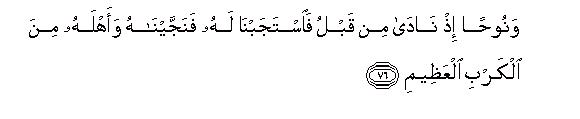
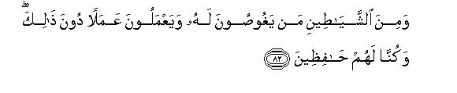

بسم الله الرحمن الرحيم
Sayyid Abul Ala Maududi - Tafhim al-Qur'an - The Meaning of the Qur'an
 21.
Surah Al Anbiyaa (The Prophets)
21.
Surah Al Anbiyaa (The Prophets)
The name of this Surah has not been taken from any verse but it has been called Al-Anbiyaa because it contains a continuous account of many Anbiyaa (Prophets). Nevertheless, it is a symbolic name and not a title.
Both the subject matter and the style of the Surah indicate that it was sent down in the third stage of the life of the Holy Prophet at Makkah.(Sea Introduction to Chapter VI).
This Surah discusses the conflict between the Holy Prophet and the chiefs of Makkah, which was rampant at the time of its Revelation and answers those objections and doubts which were being put forward concerning his Prophethood and the Doctrines of Tauhid and the Hereafter. The chiefs of Makkah have also been rebuked for their machinations against the Holy Prophet and warned of the evil consequences of their wicked activities. They have been admonished to give up their indifference and heedlessness that they were showing about the Message. At the end of the Surah, they have been told that the person whom they considered to be a "distress and affliction" had in reality come to them as a blessing.
In vv. 1-47, the following themes have been discussed in particular :
The objection of the disbelievers that a human being could not be a Messenger and therefore they could not accept Muhammad (peace be upon him) as a Prophet, has been refuted.
They have been taken to task for raising multifarious and contradictory objections against the Holy Prophet and the Qur'an.
Their wrong conception of life has been proved to be false because it was responsible for their indifferent and heedless attitude towards the Message of the Holy Prophet. They believed that life was merely a sport and pastime and had no purpose behind or before it and there was no accountability or reward or punishment.
The main cause of the conflict between the disbelievers and the Holy Prophet was their insistence on the doctrine of shirk and antagonism to the Doctrine of Tauhid. So the doctrine of skirk has been refuted and the Doctrine of Tauhid reinforced by weighty and impressive though brief arguments.
Arguments and admonitions have been used to remove another misunderstanding of theirs. They presumed that Muhammad (peace be upon him) was a false prophet and his warnings of a scourge from God were empty threats, just because no scourge was visiting them in spite of their persistent rejection of the Prophet.
In vv. 48-91, instances have been cited from the important events of the life stories of the Prophets to show that all the Prophets, who were sent by God, were human beings and had all the characteristics of a man except those which were exclusive to Prophethood. They had no share in Godhead and they had to implore Allah to fulfill each and every necessity of theirs.
Along with these two other things have also been mentioned:
All the Prophets had to pass through distress and affliction; their opponents did their worst to thwart their mission, but in spite of it they came out successful by the extraordinary succor from Allah.
All the Prophets had one and the same "way of life', the same as was being presented by Muhammad (Allah's peace be upon him), and that was the only Right Way of Life and all other ways invented and introduced by mischievous people were utterly wrong.
In vv. 92-106, it has been declared that only those who follow the Right Way, will come out successful in the final judgment of God and those who discard it shall meet with the worst consequences.
In vv. 107-112, the people have been told that it is a great favor of Allah that He has sent His Messenger to inform them beforehand of this Reality and that those, who consider his coming to be an affliction instead of a blessing, are foolish people.

In the name of Allah, the Compassionate, the Merciful.
[1-3] The time of the reckoning of the people has drawn near,1 and yet they are turning away (from the Admonition) in heedlessness.2 They give a mere formal hearing to every new Revelation3 that comes to them from their Lord and remain engaged in the game (of life) for their hearts are preoccupied (with other matters.)4
And the unjust people whisper to one another, saying, "This man is no more than a human being like yourselves. What! Will you, then, be enticed by his sorcery while you perceive it?"5
[4] To this the Prophet replied, "My Lord has the knowledge of everything that is said in the heavens and the earth for He is All-Hearing, All-Knowing."6
[5-6] Then, they say, "It is a bundle of incoherent dreams: nay, he himself has invented it: nay, he is a poet;7 if not, let him bring a sign like the signs with which the former Prophets were sent." The fact, however, is that no habitation, which We destroyed before them, believed (in spite of signs); now, will they, then, believe?8
[7-9] And, O Muhammad, We sent before you also human beings as Messengers, to whom We revealed (Our Message).9 If you (O objectors,) have no knowledge of this, you may ask the people of the Book.10 We did not give them such bodies as could survive without food nor were they immortal. Then We fulfilled Our promises with them and ultimately delivered them and whomsoever We willed, and destroyed the transgressors.11

[10] O people, We have sent down to you a Book, which deals with matters concerning yourselves. What, do you not understand this?12
[11-15] Many a habitation of wicked people is there, which We crushed to piece, and after them raised up another people. When they perceived Our Scourge13 they began to flee the place. (Then it was said to them:) "Do not run away: go back to the same life of luxury and the houses where you were making merry: perhaps you may be asked about it."14 They cried out, "Woe be to us: indeed we were wrong-doers." They went on crying out this very thing till We threshed them, leaving no spark of life in them.
[16-18] We have not created for a pastime the heavens and the earth and whatever is between them.15 Had We meant to make it a plaything and nothing more than this, We would have done it by Ourself.16 But We give falsehood a hard blow with the Truth, which breaks its head and falsehood vanishes away in no time; and there is woe for you because of the falsehoods you invent.17
[19-20] All that exists in the heavens and the earth belongs to Allah:18 and (the angels) who are near Him19 disdain not to serve Him, nor do they feel wearied:20 they glorify Him night and day without taking rest.
[21] Have the earthly deities they have set up the power to give life and raise the (inanimate) things?21
[22-23] Had there been other deities besides Allah in the heavens and the earth, both (the heavens and the earth) would have gone out of order.22 So, absolutely free is Allah, Lord of the Throne,23 from the false things they ascribe to Him. He is accountable to none for what He does, but all others are accountable (to Him).
[24-25] Have they discarded Him and set up other deities? Say to them, O Muhammad, "Bring your authority; here is this Book, which contains Admonition for the people of my time, and there are also those Books which contained Admonition for the former people."24 But most of these people have no knowledge of the Reality; therefore they have turned away from it.25 The fact is that to every Messenger whom We sent down before you, We revealed this same thing: "There is no other deity than Me: so worship Me alone."

[26-29] They say, "The Merciful has offspring."26 Glory be to Allah!they are His mere servants who have been honored: they do not exceed the limits in their talk before Him and just do His bidding. He knows whatever is before them and also whatever is hidden from them; they "do not intercede for anyone except for the one for whom Allah pleases to hear a plea, and they live in awe of Him27 And if anyone of them were to say, "I am also a deity besides Allah", We would send him to Hell, for this is the recompense from Us for such workers of iniquity.
[30-33] Have not the people, who have disbelieved (the Message), ever considered this: the heavens and the earth were at first one mass; then We parted them,28 and created every living thing from water?29 Do they not acknowledge (that this is Our Creation)? And We set mountains firmly in the earth lest it should tilt to one side along with them,30 and We left therein open paths31 so that they may find their way.32 And We made the sky a safe canopy,33 but in spite of this they do not pay due heed to its signs.34 And it is Allah, Who has made the night and the day and created the sun and the moon; all of them are floating, each in its own orbit.35

[34-35] And,36 O Muhammad, no man have We made immortal before you; then, if you die, will they live on for ever? Every living being has to taste death,37 and We are putting all of you to trial by passing you through good and bad conditions,38 and ultimately you shall return to Us.
[36] When these disbelievers see you, they scoff at you: they say, "What! Is this the man who speaks slightingly of your deities?"39 But as for them they discard with disdain the mention of the Merciful.40
[37-41] Man is a creature of haste (and impatience).41 Well, you need not be impatient: I will show you My signs before long.42 They ask, "Anyhow, when will this threat be made good, if you speak the truth?" Would that the disbelievers knew something about the time, when they shall neither be able to protect their faces from the Fire nor their backs, nor will they get any succor from anywhere! For that catastrophe will occur all of a sudden and will overpower them so abruptly that they shall neither be able to ward it off nor shall they get any respite. As for their scoff, the Messengers before you also have been scoffed at, but the scoffers were encircled by that very doom at which they used to scoff.

[42-46] O Muhammad, ask them, "Who is there to protect you from the Merciful in the night or in the day?"43 (None!) Yet they are paying no heed to the Admonition of their Lord. Do they have gods who can defend them against Us? (No) for they can neither help themselves nor are they helped by Us. The fact is that We provided them and their forefathers with provisions of life until the period grew too long for them.44 But can they not see that We are coming in the land, shrinking its boundaries for them on all sides?45 Do they, then, expect to come out victorious (over Us)?46 Say to them, "I am warning you on the authority of . Revelation" But the deaf do not hear the call when they are warned. However, even if the slightest torment of your Lord touched them,47 they would forthwith cry out, "Woe to us ! no doubt we were wrong-doers."
[47] On the Day of Resurrection, We will set up just and accurate balances so that no one will be wronged in the least in anyway; even if it be an act equal in weight to a grain of mustard seed, We will bring it forth (to be weighed) and We suffice for reckoning.48
[48-50] Before49 this We bestowed on Moses and Aaron the Criterion and Light and "Admonition"50 for the betterment of those righteous51 people, who fear their Lord though they have not seen Him, and dread the Hours52 (of Reckoning). And now We have sent down this blessed "Admonition" (for you). Do you, then, reject this?
[51-54] Even before that, We had blessed Abraham with the discretion he displayed, for We knew him well.53 Recall to mind the occasion54 when he said to his father and his people, "What are these images to which you are so devoted"? They replied, "We found our forefathers worshiping them". He said, "You have gone astray and so had your forefathers manifestly deviated from the Right Way."


[55-73] They said, "What! Are you presenting your real ideas before us, or are you jesting?"55 He answered, "Nay, in fact your Lord is the same Who is the Lord of the heavens and the earth and their Creator! I hear witness to this, and, by God, I will out-wit your idols in your absence."56 Accordingly, he broke them into pieces,57 but he left the major one intact so that they might turn to it.58 (On their return when they saw the plight of their idols,) they said, "Who has done this to our gods? Indeed he must be a spiteful person." Some replied, "We heard a young man called Abraham talking about them". At this, they said, ''Then seize him, and bring him here before the people so that they may witness (how severely he is dealt with)".59 (When Abraham came there, ) they asked, "O Abraham, have you done this to our gods?" He answered, "Nay, all this has been done by their chief; you may ask them, if they can speak"60 This turned them to (search) their own conscience, and they said (to themselves), "Surely you yourselves are in the wrong". But soon after this their minds became perverse,61 and they said, "You know that they cannot speak". At this Abraham said, "Do you even then discard Allah and worship these things which are unable to do any good or harm to you? Fie upon you and the deities you worship instead of Allah! What! have you got no sense at all?" They said, "Burn him alive and avenge your gods, if you want to take any action". At this, We commanded, O fire! be cool and become safe for Abraham".62They intended to do some harm to Abraham, but We frustrated them in their evil design. Then We brought him and Lot63 safely to the land, which We have made blessed for all the people of the world.64 Then We bestowed on him Isaac and added Jacob to him,65 and We made each of them righteous. We appointed them leaders who guided others by Our Command. We also enjoined them by Revelation to do righteous deeds and establish Salat and pay Zakat dues, and they all worshiped Us.66
[74-75] And We bestowed judgment and knowledge67 on Lot, and delivered him from that habitation which committed indecent deeds. Indeed, they were a very wicked, perverse and disobedient people. And We admitted Lot into Our Mercy: he was, indeed, of the righteous people.

[76-77] And We blessed Noah with the same favor; remember that he had invoked Us68 before those Prophets; We heard his prayer and delivered him and the people of his house from the great calamity69 and helped him against those who had treated Our Revelations as false. They were indeed a very wicked people, so We drowned them all together.
[78-79] And We bestowed the same favor upon David and Solomon: Remember the occasion when the two were judging a case regarding a field into which the goats of other people had strayed at night, and We Ourself were watching their conduct of the case. At that time We guided Solomon to the right decision, though We had bestowed wisdom and knowledge upon both of them.70

[80-82] We had subdued to David the mountains and the birds which joined with him in Our praise:71 It was We Who had done all this. And We taught him for your benefit the armorer's craft so that you might protect yourselves from each other's violence.72 Are you, then, grateful?73 And We had subdued to Solomon the strongly blowing wind which sped at his bidding to the land wherein We had placed Our blessings,74 for We had the knowledge of everything. And We had subjected to him many of the satans who dived into the sea for him, and performed other works besides this: and We kept watch over all of them.75
[83-84] And We had given Job76 the same (blessing of wisdom and knowledge). Remember when he invoked his Lord, saying, "I have been afflicted with the disease, and Thou art most Merciful."77 We heard his prayer and relieved him of his affliction78 and gave him back not only those of his family but also as many more with them as a favor from Us so that it may serve as a reminder to Our worshipers.79
[85-86] And the same blessing was bestowed upon Ismael and Idris80 and Zul-Kifl,81 because they all practiced fortitude. We admitted them to Our mercy because they were of the righteous people.
[87-88] And We showed a favor to Zun-nun (Jonah)82 Remember when he went away in anger83 for he thought that We would not take him to task for this.84 But afterwards he invoked Us from the depths of darkness,85 saying, "There is no God but Thou: glory be to Thee: I had indeed committed a wrong". So We heard his prayer, and delivered him from the affliction: Thus do We deliver the believers.
[89-90] And (We showed a favor) to Zacharias, when he invoked his Lord, saying, "O Lord, do not leave me childless though Thou alone art the best Inheritor". So We heard his prayer, and bestowed on him Yahya (John) and made his wife fit. (to bear a child) for him.86 These people exerted their utmost in righteous deeds and called upon Us with love and fear and they remained humble before Us.87
[91] And (We blessed) that woman who had kept her chastity.88 We breathed into her of Our Spirit89 and made her and her son a Sign to the whole world.90

[92-93] Indeed this community of yours is one community, and I am your Lord: so worship Me alone. But the people (of their own accord) cut asunder their (one) Creed into many religions;91 they have all to return to Us.

[94-103] Then whosoever does good deeds, and he is a believer as well, his work will not be treated slightingly: We are recording it all. And it is not possible that the habitation We have once destroyed gets another lease of life92 until Gog and Magog are let loose: they will swoop down from every height, and the time of the fulfillment of the True Promise will draw near,93 whereupon the eyes of those who had disbelieved will be struck with amazement: they will say, "Woe to us: we were heedless of this: nay, we were wrong-doers."94 As a matter of fact, you and your deities, whom you worship beside Allah, are fuel of Hell, wherein you have to enter;95 had they really been God, they would not have gone there; now therein they will dwell for ever. There they will groan,96 but they shall hear nothing (in response due to the roaring noise). As for those for whom We will already have ordained good (rewards), they will be kept far away from it97 they will not hear even its faintest sound and they shall dwell for ever in the midst of those things which they will desire and cherish most; the time of the great fright will not trouble them at all;98 the angels will rush forth to receive them, saying: "This is the very Day which you were promised!"
[104-106] On that Day, We will roll up the sky as the leaves of paper are rolled up in a written scroll. We will bang forth the creation once again as We had originated it before. This is a promise We have made to Ourself, and We have to fulfill it. And We have written in the Psalms after the Admonition: "Our righteous servants shall inherit the land." Surely in this is a great news for those people who worship Us.99
[107-111] O Muhammad! We have sent you to be a real blessing for the people of the world.100 Say to them, "That which is revealed to me is this: Your Deity is One Deity only. Will you, then, surrender to Him?" If even then, they turn away from it, tell them plainly, "I have warned you openly; now I do not know whether that thing with which you are being threatened101 is near at hand or far off. You should, however, note it well that) Allah has the knowledge of what is uttered aloud and also of what you talk about secretly.102 I think that this (delay) may be a trial for you,103 and you are being given respite to enjoy yourselves for an appointed term."
[112] (At long last) the Messenger said, "O my Lord, pass Thy Judgment with the truth. And, O people, we trust in our Lord, the Merciful, to help us against the things you say."
1"The time....near": the time of Resurrection. This is to warn the people that the time of Resurrection when they will have to appear before their Lord to render their accounts is not far. This was because the coming of the Holy Prophet was a sign and a clear evidence of the fact that mankind had entered the last stage of its history. The Holy Prophet himself explained it by holding out two of his adjoining fingers and said, "I have been sent at a time which joins to the time of Resurrection just as these two fingers adjoin" . By this he meant to say, "No other Prophet is coming between me and the Resurrection. Therefore mend your ways now, for after me no guide is coming with good news and warning."
2That is, "They do not pay heed to any warning nor reflect on their end nor listen to the admonition of the Messenger."
3"New Revelation": A new Surah of the Qur'an.
4The words of the original Text may also be interpreted as: "They do not take life seriously but treat it as a sport and a joke".
5This may also be translated as: "What, are you then being ensnared by his magic?"
The disbelievers, who were the chiefs of Makkah, whispered to one another to this effect: "Anyhow this man cannot be a Prophet because he is a human being like us and eats and drinks and has wife and children like us. We see nothing unusual about him that might distinguish him from us and make him worthy of the office of Prophethood. We, however, admit that there is some magic in his talk and personality. That is why any one who listens to him or goes near Him is charmed. Therefore, the best thing for you is not to listen to him at all, nor go near him, for listening to him or going near him will only be involving yourselves intentionally in his snare."
The reason why they accused the Holy Prophet of practicing magic was that even his antagonists were "charmed" by his personality. when they met him. Muhammad bin Ishaq (d. 152 A.H.) says, "Once `Utbah bin Rabi`ah, the father-in-law of Abu Sufyan, said to the chiefs that he wanted to see Muhammad and give him counsel. They said, `We have full confidence in you; you may go and have a talk with him.' Accordingly, he went to the Holy Prophet and said, `Dear nephew, you know that you were held in great honor here before this and you belong to a noble family. Why have you then brought this affliction to your people? You have caused discard among them: you consider your people to be fools: you speak ill of their religion and deities, and you declare their deceased forefathers to be disbelievers. My dear nephew, if your object is to become a rich man, we can give you so much wealth that you will become the richest man among us: if you are seeking a high rank, we will make you our chief, even our king, if you so like. But if you are suffering from a mental illness which makes you see illusions, we will have you treated by the best physicians.' He went on talking in this strain and the Holy Prophet remained silent. When he had a long talk, the Holy Prophet said, `Abul Walid, have you had your say or do you want to say anything more?' He replied that he had said what he had to say. Then the Holy Prophet said, `Now listen to me'. And he began to recite Surah Ha Mim Sajdah (Chapter XLI) after Bismillah and Utbah listened to him as if he had been charmed. When the Holy Prophet came to v. 38, he fell down in prostration. Then raising his head, he said, 'O Abul Walid, I have said whatever I had to say, and you have heard it. Now I have nothing more to say'. After this `Utbah walked back towards the chiefs who perceived him to be a changed man, and remarked, `By God ! his face shows that he is not the same man that he was when he went from here.' When he came to them, they asked, `What has been the result of your mission'? He answered, `By God, today I have heard a thing the like of which I had never heard before. By Allah! It is not poetry nor sorcery nor divination. O people of Quraish, I advise you to leave him to himself. From what I have heard from him, I conclude that his Message is going to bring about a great revolution here. If the Arabs overcome him, you will stand absolved from the charge of murdering your own brother, and if he over-powers the Arabs, his sovereignty will be your own sovereignty and his honor your own honor.' The people answered, `By God! you, too, O Abul Walid, have been charmed by him'. To this he replied, `I have expressed my opinion. Now it is for you to accept or reject it'." (Ibn Hisham, Vol. I, pp. 313-314). Baihaqi, in his narration of the above event, makes this addition: "When the Holy Prophet recited v. 13: `If they turn away from your Message, say to them, I have warned you of the coming of a thunderbolt like the thunderbolt that visited the `Ad and the Thamud', `Utbah placed his hand on the mouth of the Holy Prophet, saying, `For God's sake, have mercy on your own people'."
In this connection, ibn Ishaq has cited another event. Once a man from the clan of Arash came to Makkah with some camels and Abu Jahl bought them. When he demanded their price, he put him off by lame excuses. At last the man came to the Sanctuary of the Ka`bah and began to bewail publicly the dishonesty of Abu Jahl. The Holy Prophet was also sitting in a corner of the Sanctuary. The chiefs of the Quraish said to the man, "We cannot help you in any way in this matter; look, there is a man sitting: go to him and he will get you your money." Accordingly the Arashi went towards the Holy Prophet and the chiefs began to whisper jokingly, "Today there will be great fun!" When the man expressed his complaint before the Holy Prophet, he at once stood up and accompanied him to the house of Abu Jahl, followed by an informer of the chiefs. The Holy Prophet knocked at Abu Jahl's door, who asked from inside, "Who is there"? He answered, "Muhammad". Hearing this, he at once came out and the Holy Prophet said to him, "Pay this man his dues." Accordingly, Abu Jahl went in without uttering a word, brought the price of the camels and paid the man. At this the informer ran back to the Quraish and told them the whole story and said, "By God, today I have seen something which I had never seen before. When Abu Jahl came out, Muhammad asked him to pay the dues, and he obeyed him as if he were spell bound." (Ibn Hisham, Vol. II, pp. 29-30).
It was this "charm" of the personality, character and words of the Holy Prophet which these people considered to be the effects of "charm" and warned the people not to go near him for fear of his "magic."
6This was the answer of the Prophet to their false propaganda and whispering campaign. Instead of giving a `tit for tat' answer, he said, "My Lord will deal with you for He hears everything and knows everything."
7The background of this verse is this: "When the message of the Holy Prophet started gaining adherents, the chiefs of Makkah decided among themselves to start a propaganda campaign to counteract it. For this purpose they decided that every visitor to Makkah for pilgrimage should be approached and his mind so poisoned against the Holy Prophet that he dces not even go near and listen to him. Though this campaign continued throughout the year, in the pilgrimage season specially a large number of men were deputed to go to the tents of the pilgrims to warn them to beware of the Holy Prophet. Different sorts of things were said against the Holy Prophet during these talks. Sometimes it was said that he was a sorcerer, or that he had fabricated the Qur'an himself but attributed it to Allah. Some would say that his `Revelations' were the words of an insane person and a bundle of incoherent ideas. Others would say that these were ordinary poetic ideas which were being dubbed as the words of Allah. All they wanted to do was to poison the minds of the visitors irrespective of the correctness of their own versions. They had no considered and definite opinion in the matter.
This false propaganda, however, had just the opposite effect. The name of the Holy Prophet became known throughout the length and breadth of the country through the nefarious activities of the chiefs of Makkah. A positive kind of approach from the Muslims would not have achieved the same publicity in years as was achieved so rapidly through this negative campaign of the Quraish. It set everybody thinking: "After all, who is this man against whom such a campaign of vilification has been started?" The serious type among them rather came to the conclusion that they must hear the Holy Prophet himself and said to themselves: "After all we are not children who can be easily enticed away".
For instance, Ibn Ishaq has related in detail the story of Tufail-bin-'Amr Dausi in his own words: "I was a poet of the clan of Daus. Once I went to Makkah and was, on my arrival there, surrounded by some people of the Quraish who told me all sorts of things against the Holy Prophet. So I grew suspicious and tried to avoid him as far as possible. The very next day, when I went to visit the Sanctuary, I saw him saying his prayer. By chance, I heard a few sentences and felt that what he was reciting were excellent words. I said to myself, `I am a poet and a sensible young man and no child who cannot discriminate between the right and the wrong. Why should I not therefore meet him and inquire what he is reciting?' Accordingly, 1 followed him to his house and said, `The people had so mch poisoned me against you that I had actually put cotton into my ears lest I should hear. your voice, but what I have heard today from you by chance was so appealing that I feel urged to inquire into your Message rather in detail. At this the Holy Prophet recited a passage of the Qur'an, as a result of which I embraced Islam there and then. On my return home I induced my father and wife to become Muslims, which they did, and then invited the people of my clan to embrace Islam with the result that till the Battle of the Trench as many as eighty families from my clan had entered the fold of Islam." (Ibn Hisham, Vol. II, pp. 22-24).
According to another tradition cited by Ibn Ishaq, the chiefs of the Quraish confessed in their private meetings that all their charges against the Holy Prophet were false. According to him, addressing a meeting, Nadr bin Harith once said, "You cannot overcome Muhammad by the methods you are adopting against him. When he was a young man you regarded him as your best-mannered person and looked upon him as your most truthful and honest man. Now that he has attained advanced age, you say, He is a sorcerer: he is a sooth-sayer: he is a poet: he is insane.' By God, he is not a sorcerer, for we very well know what kind of people the sorcerers are and what kind of tricks they resort to. By God, he is not a soothsayer, for we are fully aware of the guess-works of the sooth-sayers. By God, he is not a poet for we know what poetry is and can judge that his words cannot be classified under poetry in any sense. By God, he is not insane, for we all know what nonsensical things the insane people utter. Therefore, O chiefs of the Quraish, let us think of some other plan to defeat him". After this, he himself proposed that stories from Persia like dose of Rustam and Asfandyar should be given publicity to divert the people's attention from the Qur'an. Accordingly, they put this scheme into practice and Nadr himself began to relate such stories before the people. (Ibn Hisham, Vol. l, pp. 320-321).
8This contains a concise answer to the demand for a sign to the effect
(1) You ask for Signs like the ones which were shown by the former Messengers but you forget that those obdurate people did not believe in spite of the Signs shown to them.
(2) While demanding a Sign, you fail to realize that the people, who disbelieved even after seeing a Sign, were inevitably destroyed.
(3) It is indeed a favor of Allah that He is not showing the Sign as demanded by you. Therefore, the best course for you would be to believe without seeing a Sign. Otherwise, you will meet the same doom that the former communities met, when they did not believe even after seeing the Signs.
9This is the answer to their objection: "This man is no more than a human being like yourselves", and therefore, cannot be a Messenger of God. They have been told that the former Prophets, too, whom you also recognize as Prophets, were human beings and were blessed with Revelations from Allah.
10That is, "You may have it testified by the Jews, who are the enemies of Islam like you, and are teaching you the ways to oppose it, that all the Messengers including Prophet Moses were human beings."
11History not only tells us that the former Messengers were human beings but it also contains a lesson that they all received Allah's succor as promised by Him and their enemies were completely destroyed. Therefore you should seriously consider the goal for which you are heading.
12This is a comprehensive answer to the various objections which were being raised in desperation by the disbelievers of Makkah against the Qur'an and the Holy Prophet, as if to say:"What is there in this Book that you cannot understand? Why don't you consider it in the right spirit? There is nothing contradictory in it: it discusses you and your own problems and affairs of life; it describes your own nature, origin and end; it discriminates between good and evil and presents high moral qualities which your own consciences endorse and confirm. Why don't you, then, use your minds to understand this simple and easy thing?"
13That is, “When they realized that Allah's scourge was actually coming”
14This is a very meaningful sentence. It may mean:
(1) "Examine this scourge minutely so that if someone asks you about it, you may be able to give an accurate account of it."
(2) "Hold your grand meetings as usual: perhaps your servants may come with folded hands before you to receive orders."
(3) "Hold your councils as before, perhaps people may still come to ask for your wise counsels."
15This was to refute their entire conception of life which was based on the assumption that man was free to do whatever he liked, and there was none to call him to account or take him to task: that there was no life in the Hereafter where one's good deeds would be rewarded and evil deeds punished. In other words, this meant that the whole universe had been created without any serious purpose and therefore there was no need to pay any heed to the Message of the Prophet.
16That is, "This world has been created with a definite purpose and not as a plaything; for, if he had wanted to enjoy a sport, We would have done so without creating a sentient, rational and responsible creature like you. Far be it from Us to put man to trial and conflict for the sake of mere fun."
17That is, "The object for which this world has been created is to stage a conflict between the Truth and falsehood. And you yourselves know that in this conflict falsehood has always been defeated and destroyed: You should, therefore, consider this reality seriously, for, if you build the system of your life on the false presumption that it is mere fun, you will meet with the same consequences as the former people did, who presumed that the world was a mere show and pastime. Therefore you should reconsider your whole attitude towards the Message which has come to you. Instead of making fun of it and scoffing at the Messenger, you should take a warning from the fate of the former peoples."
18From here begins the discourse on the confirmation of Tauhid and the refutation of shirk for these were the actual bases of the conflict between the Holy Prophet and the disbelievers of Makkah. The line of argument is this: The whole system of the universe is a clear proof that there is One Allah Who is its Creator, Sovereign, Ruler, and Lord and it is a falsehood that there are many gods who are partners in His Kingdom and Sovereignty, or that there is a Supreme God Who has under Him some minor gods to conduct the affairs of His Kingdom. This proof is also based on the preceding verses in which it has been stated that the universe has not been created as a pastime or a plaything, but for a serious purpose and that there has always been a conflict between the Truth and falsehood, and falsehood has always been defeated and destroyed.
19That is, the angels whom the mushriks of Arabia believed to be the children of God and worshiped them as partners in Godhead.
20That is, "They are engaged in His service day and night without grumbling or ever feeling wearied."
21This question has been posed to bring home to the disbelievers that when they themselves believed that there is no being other than Allah who can give life to inanimate matter, why do they then acknowledge other deities besides Allah?
22This concise sentence contains two arguments:
(1) The obviously simple argument is that no institution, no household, not to speak of the vast universe containing multitudes of countless distant stars, can function smoothly and properly, if it has two masters.
(2) The deeper argument is that the system of the whole universe, including that of the earth, is functioning according to a universal law. It could not work so even for a moment, if there had been no proper proportion, balance, harmony and coordination between the different powers and countless things. This is a clear proof that there is a universal and all-powerful law and system which binds and forces these powers and things to co-operate and coordinate between themselves with a perfect proportion and harmony and this could not have happened if there had been different independent rulers. The existence of such a system is itself a clear proof that there must be One All-Powerful Manager and Administrator governing and ruling the whole universe. For further details, please see E. N. 47 of Bani Isra'il (XVII).
23That is, "The Sovereign of the whole universe."
24The first two were rational arguments and this is a historical one. This means that the study of all the former Scriptures shows that the Creator of the universe is One Allah and He alone is worthy of service and worship, while "Your religion is neither supported by rational arguments nor by historical evidence."
25It is their lack of the knowledge of the Reality which has created this indifference towards the Message of the Prophet, and the same has made them heedless of the Message.
26"Offspring" here refers to the angels as is clear from v. 28. The disbelievers of Arabia believed that the angels were the daughters of God.
27These two verses refute the two reasons for which the mushriks had made the angels their deities:
(1) They took them for the offspring of Allah.
(2) They thought that if they worshiped the angels, they would be so pleased that they would intercede with Allah on their behalf. (See X:18; XXXIX:3).
In this connection, it should also be noted that the Qur'an refutes the doctrine of intercession of the mushriks, saying, that their so-called intercessors are not qualified to intercede for anyone. This is so' because they have no knowledge of the hidden things, whereas Allah knows all that is hidden from or open to them. Therefore, the angels or Prophets or saints shall be allowed intercession only with the prior permission of Allah. As Allah alone has the power to hear or accept intercession, none else is entitled to divine worship or rights. For further details, please sec Ta Ha (XX): E. N.'s 85-86.
28From the wording of the Text, it appears that at first the whole universe was a single mass of matter; then it was split into different parts and the earth and the other heavenly bodies were formed. For fuller details, please see Ha Mim (XLI):E.N.'s 13-15
29From the wording of the Text, it appears that Allah made water the cause and origin of life. See also An-Nur (XXIV): 45.
30For explanation, see E. N. 12 of An-Nahl (XVI).
31"Open paths" are the passes between high mountains and the valleys and ravines made by the rivers in the mountainous regions and other natural ways that connect different regions on the earth.
32This is a very meaningful sentence. It may mean that the people may find paths for traveling on the earth, and it may also mean that the wisdom that underlies the skill and the system of their creation may guide them to the Reality.
33For explanation, see Al-Hijr (XV): E. N's 8 and 10-12.
34That is, "Those signs which are in the sky"
35The use of the words kullun (all) and yasbahun (float) in the plural (for more than two) indicates that not only the sun and the moon but all the heavenly bodies are floating in their own separate orbits and none of them is fixed or stationary. These verses (30-33) are capable of being interpreted in the modern scientific terms in accordance with the present day conceptions of Physics, Biology and Astronomy.
Here it should also be noted that vv. 19-23 refute shirk while vv. 30-33 present positive proofs of Tauhid. They imply that the creation and regular functioning of the universe clearly show that it is the work of One All-Powerful Creator, and no sensible person can say that it has been created as a there pastime for the sake of fun. When the fact is this and you see proofs of the Doctrine of Tauhid all around yourself, in the earth and heavens, why do you reject the Message of the Prophet and demand other Signs from him?”
36From here the same theme of the conflict between the Holy Prophet and the disbelievers, that was interrupted by vv. 19-33, has been resumed.
37This is a brief answer to all those warnings and curses with which the Holy Prophet was being threatened and the conspiracies which the Quraish were hatching against him day and night. On the one hand, the women of the Quraish cursed him because according to them he had ruined their home life by enticing away their kith and kits; while on the other, the chiefs of the Quraish threatened hits with horrible consequences for the propagation of Islam. After the emigration to Habash especially, which almost affected every home of Makkah, these curses and threats increased all the more. This verse is meant to comfort and console the Holy Prophet as well so that he should continue his mission without any fear of their threats.
38That is, Allah is always putting human beings to test and trial both through adversity and affluence. This is to judge whether prosperity makes them proud, cruel and slaves of their lusts or they become grateful to Allah. On the other hand, He inflicts adversity upon them in order to see whether they remain within the prescribed and lawful limits or become low-spirited and down-hearted. A sensible person therefore should not be deluded by prosperity and adversity, but should keep their trial element in view and try to pass through it gracefully.
39It should be noted that this sentence contains only the reason why they scoffed at him, but does not refer to the expression of "scoff" itself. Obviously, the disbelievers must have been using some other words or expressions of derision to avenge themselves on the Holy Prophet for his rejecting their self-made deities.
40This is to rebuke the disbelieves, as if to say, "You cherish so much love of your self-made idols and false gods that you cannot tolerate anything against them; so much so that you scoff at the Messenger of Allah, but, as for you, you are not ashamed that you are stung to the quick when you hear the name of the Merciful and discard His mention with disdain."
41This is not the literal translation of the Text; its purport according to the Arabic usage is: "Man is a hasty and impatient creature by his very nature." The same thing has been stated in XVII:11: "Man is very hasty and impatient."
42From the succeeding sentences it is obvious that "Signs" here stands for the things that have been mentioned therein-the "threat" of the scourge of Allah, Resurrection and Hell. They made fun of these, as if to say: "This man threatens us with the scourge of Allah and the torment of the Day of Resurrection if we deny him and that we shall become fuel of Hell; but nothing of the sort has befallen us. We are as strong as ever and nothing seems to be happening".
43That is to say, "Who is there to protect and save you from the scourge of Allah if you are suddenly visited by it any time during the night or day?"
44In other words it means: "These people have been deluded by Our favor and Our provisions. They think they are enjoying prosperity and good life as their personal right and there is none to take it away from them. They have forgotten that there is God above them Who is able to make or mar their fortune".
45In this connection, see Ar-Ra`d (XIII): 41 and E. N. 60 thereof. Here it bears an additional meaning also: "Do they not see that an All-Powerful Being is showing His Signs every now and then everywhere on the earth in the form of famines, epidemics, floods, earthquakes and other calamities; millions of people are killed, habitations and harvests are destroyed and other damages are caused, which frustrate all human designs?"
46It means: "When they know that all the resources and provisions of life are in Our hands and that We can increase or decrease them as We will, have they the power and strength to defend themselves against Our punishment? Can they not see from these "Signs" that their power, prosperity and luxury are not everlasting and that there is an All-Powerful Allah to seize and punish them?"
47That is, "The same scourge which they are demanding to be hastened and of which they are making fun."
48See also vv. 8-9 and E.N.'s 8-9 of Al-A'araf (Vll). It is difficult for us to understand the exact nature of the "Balance". Anyhow it is clear that the "Balance" will weigh accurately all the human moral deeds instead of material things, and will help judge whether a man is virtuous or wicked and how much. The Qur'an has used this word to make mankind understand that every deed, good or bad, will be weighed and judged according to merit.
49From here begin the stories of the Prophets. If we consider these stories in the context in which they occur, it becomes plain that these have been related to impress the following themes:
(1) All the former Prophets were human beings: therefore there is nothing strange or unusual that a human being like Muhammad has been sent as a Messenger (Allah's peace be upon him).
(2) The Mission and teachings of this Prophet are the same as of those who were sent before him.
(3) All the Prophets had been granted a privileged position by Allah, Who blessed them with special favors. For instance, though they were made to suffer from hardships and persecutions for years, ultimately Allah heard their prayers and helped them in miraculous ways against their enemies and persecutors.
(4) In spite of Allah's special favors on them they were no more than His humble servants and human beings and had no share whatever in Godhead; so much so that sometimes they committed errors of judgment, fell ill, were put to trials and even committed faults, for which they were called to account by Allah.
50All the three words have been used in praise of the Torah: (1) A Criterion which distinguished the Truth from falsehood. (2) A Light which showed the Right Way of life, and (3) An Admonition, which reminded the erring descendants of Adam to remember the lesson they had forgotten.
51Though it was sent for the good of all human beings, only the pious people, having these characteristics, could benefit from it.
52The Hour of "Resurrection".
53The Arabic word (rushd) is very comprehensive and means righteousness as well.
"We had blessed Abraham with discretion;" "The discretion he showed in discriminating between the right and the wrong etc. was not of his own acquirement but had been bestowed on him by Us." AI-Anbiyaa'
"We knew him well": "We knew that he was worthy of Prophethood; therefore We appointed him as such". According to VI:124: " .... Allah knows best whom to entrust with His Mission ...."It contains a subtle answer to the objection raised by the chiefs of the Quraish: "Why has Allah appointed this man (the Holy Prophet) to the office of Prophethood, when he is in no way superior to us?" This objection has been answered, as if to say, "The same objection might even have been raised against Prophet Abraham by his people, but We knew his capabilities. Therefore We selected him for Prophethood."
In this connection, please also see II: 124141, 258-260; VI: 74-84; IX: 114; XI: 69-76; XIV: 35-41; XV: 51-58 and XVI: 120-122 and the E.N's thereof.
54Before proceeding further it should be kept in mind that the incident from the history of Prophet Abraham has been cited here to refute the erroneous creeds of the Quraish. This was meant to hit them hard for they were the descendants of Prophet Abraham and were proud of their relationship with him. It was he who had built the Ka`abah which had become the center of the whole of Arabia and they, being its keepers, were its most important clan. Therefore, they could not remain indifferent to this answer.
55The literal translation will be: "Are you presenting the Truth before us, or just playing with us?" They were so sure of the truth of their creed that they could never imagine that anyone could be serious in declaring it to be false.
56That is, "If you do not understand this by argument, I will present a practical proof that these idols are helpless and have no powers. Therefore, it is wrong to make them your deities."
57This was that practical proof. In the absence of the priests and attendants, Prophet Abraham entered their central Temple and broke all the idols to pieces.
58The pronoun in the original Text may be translated into "it" or "him". In the former case, it will refer to the chief idol and in the latter to Prophet Abraham. In the first case, it will imply a subtle sarcasm in order to make them realize that their creed of idol-worship was foolish, for obviously the chief idol could not break the minor idols. In the second case, it will refer to Prophet Abraham, who thought that they might turn to him about the "incident" and he might get an opportunity to have a frank talk with them about their absurd creed.
59This was exactly what Prophet Abraham expected to happen. He wished that the matter should not remain confined to the priests and the attendants but the common people also should be present there to witness that their deities were helpless and their priests were deluding them about their powers. The priests committed the same folly as was later committed by Pharaoh when he arranged an encounter between Prophet Moses and the magicians in the open in front of the multitudes of the common people, and the former got an opportunity to show publicly the miracle of the staff which shattered the illusory, magical tricks of the magicians.
60The very sentence, "You may ask them, if they can speak", is a clear proof that it was not a lie when Prophet Abraham said, "All this has been done by their chief." What he intended by this was to make them realize and confess that their idols were helpless because they could do nothing to protect themselves, and could not even speak. It is clear that when a person poses an unreal question for the sake of argument in order to bring home the fact that the position taken by the other party is untenable, it cannot be considered as a lie; firstly, because the speaker himself never intended it to be a lie, and secondly, because the addressees also knew that it was not a lie.
The foregoing remarks have been necessitated because of a "tradition" that Prophet Abraham told three "lies" in his life, of which one is the above mentioned event. The second "lie" is contained in XXXVII: 89: "I am indisposed", and the third "lie" is not contained in the Qur'an but in the Bible that he declared his wife to be his sister. (Gen. 12:12,13, 18;19). It is a pity that this "tradition" has given rise to two divergent opinions. The orthodox traditionalists actually believe that Prophet Abraham told these lies just because an "authentic tradition" says so. They do not consider that it is far better to discard the "tradition" according to which a Prophet is accused of being a "liar". On the other hand, those who are against the Traditions, discard all of them just because this solitary tradition, which has been reported as authentic by Bukhari and Muslim, is unreliable on the very face of it. Obviously it needs no elaborate arguments to prove that all the traditions cannot be discarded just because one or a few of them are unreliable. As regards the upholders of the first opinion, they have gone to the other extreme and think that a tradition can be discarded in spite of the authenticity of its reporters for cogent reasons. They do this without reference to the contents of the tradition itself. But if the text of the tradition itself clearly shows that such a thing could not have been said by the Holy Prophet, there is no reason to insist that it should be accepted as authentic merely because its reporters are authentic.
This, tradition is unreliable for other reasons also. As has already been shown, the first "lie" is no lie at all. As regards the second "lie", ("I am indisposed"); it cannot be considered as a lie unless it is proved beyond doubt that Prophet Abraham was perfectly healthy at that time, and the text does not testify this. As regards the third "lie", the event stated in the Bible in chapter 12 of Genesis is absurd on the face of it. When Prophet Abraham went to Egypt with his wife Sarah, he was, according to the Bible itself, 75 years old and his wife was 65. Therefore the very age of Sarah is a clear proof that she could not be a "fair woman to look upon" to force Prophet Abraham to pose that she was his sister in order to save his life. The tradition under discussion, which accuses Prophet Abraham to be guilty of telling a lie, has accordingly no basis at all and cannot be taken as reliable in spite of its authentic reporters.
61Literally the original Text means: "They were turned down upon their heads." Some commentators have interpreted it to mean: "They hung down their heads with shame". But this does not fit in the context and the wording of the Text. The right interpretation would be: "When they considered the answer of Prophet Abraham, they realized that they themselves were in the wrong, because they had set up helpless idols as deities, which could not even speak a word as to who had broken them. But soon after this, they were overpowered by obduracy and ignorance which perverted their minds and they again relapsed into crookedness."
62Though this is one of those miracles which have been clearly stated in the Qur'an, there are people who try to "prove" that there was no such miracle at all. According to this passage (vv. 68-70), Prophet Abraham was actually threatened to be burnt alive and he was accordingly thrown into the burning fire; but Allah ordered the fire to become cool and harmless for him. In the face of the clear words of the Qur'an, these people deny this miracle because according to them it is impossible even for Allah to go beyond the routine of the physical laws. They say that miracles cannot appeal to the rationalists of the modern age, and therefore these should be interpreted in accordance with physical laws. They forget that according to the Qur'an, Allah is able to do everything, and He does extraordinary and unusual things which cannot be explained by "science". Therefore they should accept the Qur'an as it is or discard it, but they should not twist it to suit their so-called rationalism.
63According to the Bible, Prophet Abraham had two brothers, Nahor and Haran; Prophet Lot was the son of Haran (Gen. 11:26), and he was the only person to believe in Prophet Abraham. (XXIX: 26).
64The "blessed land" refers to Syria and Palestine, which contains both material and spiritual blessings. It is one of the most fertile regions in the world; moreover, it was blessed for two thousand years with more Prophets than any other region of the world.
65That is, "We made his son a Prophet and his grandson too".
66This important event of the life of Prophet Abraham has found no mention whatever in the Bible. In fact nothing about his life in `Iraq -his conflict with Nimrod, his father and the community at large, his efforts to eradicate idolatry, the incident of his being cast into the fire, which ultimately led to his forced exile from the country-is mentioned anywhere in the Bible. The Bible merely mentions his migration, and that too, in a manner as if a family was migrating from one country to another in search of livelihood. There is another interesting difference between the Qur'an and the Bible. According to the Qur'an, the father of Abraham, who was a mushrik, was foremost in tyrannizing over his son, but the Bible gives a different account, which is as follows:
"Now these are the generations of Terah: Terah begat Abram, Nahor, and Haran; and Haran begat Lot. And Haran died before his father Terah in the land of his nativity, in Ur of the Chaldees. And Abram and Nahor took them wives: the name of Abram's wife was Sarai; and the name of Nahor's wife, Milcah the daughter of Haran, the father of Milcah, and the father of Iscah. But Sarai was barren; she had no child. And Terah took Abram 'his son, and Lot the son of Haran his son's son, and Sarai his daughter in law, his son Abram's wife; and they went forth with them from Ur of the Chaldees, to go into the land of Canaan; and they came unto Haran, and settled there. And the days of Terah were two hundred and five years: and Terah died in Haran." (Gen. 11:27-32).
"Now the Lord had said unto Abram, Get thee out of thy country, and from thy kindred, and from thy father's house, unto a land that I will shew thee: And I will make of thee a great nation, and I will bless thee, and make thy name great; and thou shalt be a blessing: And 1 will bless them that bless thee, and curse him that curseth thee and in thee shall all families of the earth be blessed." (Gen. 12: 1-3).
The Talmud, however, gives quite a few details about the life of Prophet Abraham about the period of his stay in `Iraq, which are generally the same as given in the Qur'an, but there is a glaring discrepancy in some of the important events. In fact, one can clearly feel that the account given in the Talmud is full of heterogeneous and hypothetical things while the one given in the Qur'an is most clear and contains nothing unworthy of Prophet Abraham. We reproduce below the account as given in the Talmud so that the reader may know the difference between the Quranic and Jewish versions. This will also remove the misunderstanding of those who think that the Qur'an has borrowed stories from the Bible or Jewish literature.
According to the Talmud, "The wise men saw a large star in the sky on the night Abram was born and they advised Nimrod to kill the child born in the house of Terah. The King decided to kill the child but Terah hid his child and had a servant's son killed in exchange. Terah thereupon hid his wife and child in a cave where they lived for ten years. In the 11th year Abram was taken by Terah to Noah, where he lived under the guidance of Noah and his son Shem for 39 years. During the same period Abram married his niece Sarai, who was 42 years his junior. (The Bible does not mention that Sarai was the niece of Abram; moreover, the difference in their ages is mentioned as ten years). (Gen. 11: 29, 17: 17).
The Talmud then says, "Abram left Noah at the age of 50 and came back to his father. Here he found that his father was an idolatry and had twelve idols in the house according to the twelve months of the year. He tried to preach to his father against idolatry but when the latter did not listen to him, Abram one day broke all the idols in the house. Seeing this Terah went straight to Nimrod and complained that the son who was born in his house 50 years ago had misbehaved and broken the idols. He wanted the King's verdict on this. Nimrod sununoned Abram for interrogation, but the replies given by Abram were straight, terse and clear. Nimrod sent him to jail and then referred the matter to the Council for a decision. The Council decided that Abram should be burnt to death. A fire was accordingly prepared and Abram was cast into it. His brother and father-in-law Haran was also similarly cast into the fire. Haran was punished because Nimrod enquired of Terah as to why he had another child killed in place of Abram when he wanted to kill Abram on the day of his birth. Terah replied that this was done at the instigation of Haran. Nimrod accordingly let off Terah but threw Haran into the fire along with Abram. Haran was burnt to death instantly but people saw that Abram was walking unhurt through the flames. When Nimrod was informed of it, he witnessed it with his own eyes and cried out: `O man of the God of Heaven, come out of the fire and stand before me'. Thereupon, Abram came out and Nimrod became one of his .believers and gave him many costly presents. After this, according to the Talmud, Abram stayed in `Iraq for two more years when Nimrod saw a dreadful dream and the astrologers told him that the destruction of his empire .would come through Abram and that he should, therefore, put him to death. Nimrod sent people to kill Abram but Abram came to know of the plot before-hand through Eleazar, a slave presented to him by Nimrod himself. Abram accordingly fled and took refuge with Noah where Terah also met him off and on secretly. The father and the son at last decided to leave the country and Noah and his son Shem also approved of their plan. Accordingly, Terah along with his son Abram and his grandson Lot and his grand-daughter and son's wife Sarai, left U: and went to Haran." (H. Polano: The Talmud Selections, London, pp. 30-42).
Can a reasonable person after reading this account of the Talmud ever imagine that this could be a source book for the story as given in the Qur'an?
67The original Arabic word hukm is very comprehensive. It means judgment, wisdom and discretion, and authority from Allah. `Ilm stands for the revealed knowledge of the Truth. Thus, "We bestowed hukm and `ilm on Lot": "We appointed Lot as a Prophet". (For the story of Lot, see VII: 80-84; Xl: 7083; XV: 57-74 and the E.N.'s there of).
68This refers to Prophet Noah's prayer which he at last made after having tried his utmost to reform his people: "Lord, help me for I have been overpowered". (LIV: 10), and "Lord, do not leave even a single disbeliever on the earth." (LXXIX 26).
69"Great calamity" may either refer to living a miserable life among the wicked people, or to the Flood. (For the story of Prophet Noah, see VII: 59-64; X: 72-74; X1: 25-48, and XVII: 3 and the E.N.'s thereof).
70There is no mention of this event in the Bible nor in the Jewish literature. According to the Muslim commentators, it happened like this: The goats of one person entered into the field of another person at night. The latter brought his complaint to Prophet David who decided that the strayed goats should be given to the owner of the field. Prophet Solomon, however, differed with this and opined that the goats should remain with the owner of the field up to the time that the former tilled and prepared the field as before. In regard to this Allah says, "We led Solomon to the right decision". As regards the legal aspect of the matter we cannot say with certainty what is the Islamic law in such a case nor is there any Tradition of the Holy Prophet to explain or support it. That is why the jurists have differed about it.
It should, however, be noted that in this context, the incident has been cited to show that the Prophets were after all human beings in spite of their God given powers and abilities. In this case, Prophet David committed an error of judgment because he was not guided by Allah as was Prophet Solomon, though both of them were Prophets. In the succeeding passage the wonderful powers of both have been mentioned to show that they were God-given and did not snake anyone a god.
Incidentally, we learn froth this verse that if two judges give different decisions about one and the same case, both of them will be regarded as righteous, though the decision of only one of them will be correct, provided that both are duly qualified for sitting in judgment on the case. The Holy Prophet has stated the same principle more elaborately. In a Tradition of Bukhari, he is reported by 'Amar bin 'As to have said, "If a judge does his very best to arrive at the right decision, he will get a double reward in case of a right judgment and a single reward if his judgment is wrong." According to another Tradition, cited by Abu Da'ud and Ibn Majah, on the authority of Buraidah, he is reported to have said, "Judges are of three kinds and only one of them will go to Paradise: the one who recognizes the Truth and decides according to it. On the other hand, the one who recognizes the Truth but gives his decision against it, will go to Hell, and he too, who sits in judgment on a case without the necessary knowledge (and competence). "
71From the wording of the Text, it is clear that "the mountains and the birds" were not subjected to Prophet David but were joined with him in glorifying Allah. This is also supported by XXXVIII:I9: "We had subdued the mountains by Our Command so that they praised Us with him (David) in the morning and evening, and the birds too, which gathered together and repeated Our praise with him". And, according to XXXIV: 10: "We commanded the mountains to repeat Our praise with him and also the birds to do the same. " We are of the opinion that it means this: "When Prophet David sang hymns of Allah's praise and glory, in his rich and sweet voice, the mountains echoed back his melodies and the birds gathered round him and the whole scene became charming." Our interpretation is supported by this Tradition:
"Once when Hadrat Abu Musa Ash`ari, who had an extremely sweet voice, was reciting the Holy Qur'an, the Holy Prophet, who was passing by, stood and listened to him for a long time. When he finished the recital, the Holy Prophet remarked: 'This man has been granted a portion of the melody of David'."
72According to XXXIV: 10-11, it was like this: "....And We made the iron soft for him (and commanded him): `Make coats of mail complete in every way, and arrange the plates properly...."'. This shows that Allah had made Prophet David an expert in the use of iron, and had especially taught him the art of an armorer for defense purposes. This fact is confirmed by archaeological and historical researches, for according to these the iron-age in the world started between 1200 and 1000 BC and this was precisely the period of Prophet David. At tirst the Hittites in Syria and Asia Minor, who flourished between 2000 and 1200 BC, discovered a method of melting and molding iron, but they guarded it as a close secret from the world, and it could not be put to common use. Later on, the Philistines came to know of it, but they too guarded it as a secret. The incessant defeats suffered by the Israelites at the hands of the Hittites and the Philistines before King Saul, were due mainly to the use of chariots of iron in their wars by the latter. (Joshua, 17:16; Judges, 1: 19, 4: 2-3). In 1020 BC when Saul became ruler over the Israelites by Allah's Command, he subdued the Canaanites and recaptured most of Palestine. After him Prophet David (1004-965 BC) not only annexed the whole of Palestine and Jordan to the Israeli kingdom but a major portion of Syria as well. This was the time when the secret of armor making closely guarded by the Hittites and the Philistines, became well known and cheaper articles of daily use began to be made. The recent archaeological excavations conducted in Edom, to the south of Palestine, which is rich in iron ore, have brought to light furnaces for melting and molding iron. The furnace excavated near Ezion-geber, a port on the Gulf of `Aqabah, in the time of Prophet Solomon, seems to have been built on the principles which are used in the modern blast furnaces. It is therefore natural that Prophet David must have first of all utilized this discovery for war purposes, because a little earlier the hostile Canaanites around his kingdom had made life really difficult for his people. The Bible also says that Prophet David was an expert in the art of melting and using iron for war purposes. (See Joshua, 17: 16; Judges, 1:19 and 4: 2-3).
73For further details about Prophet David, please see II:251 and XVII: 55 and the E.N.'s thereof.
74This is also explained in XXXIV: 12: "And for Solomon We had subjected the wind which covered a month's journey in the morning and a month's journey in the evening", and in XXXVIII: 36: "So We subjected the wind to him. It blew softly at his bidding whither-soever he wanted it to blow." Thus it is clear that the wind was so subjected to Prophet Solomon that the voyages to places at one month's sea journey could be performed conveniently, because a favorable wind was always blowing for his ships to and from those places.
It is confirmed by the Bible that Prophet Solomon had developed sea trade on a large scale. ( I Kings, 10: 22). On the one side, his trade ships sailed from Ezion-geber, through the Red Sea, towards Yaman and other southern and eastern lands, and on the other, his naval fleet called Thar-shish, sailed on the Mediterranean to the western countries. The great furnace which he had built at Ezion-geber for melting and molding ores extracted from the copper and iron mines in the `Arabah in Edom, has been confirmed by modem archaeological researches as well. This molten iron and copper was used in building ships besides being put to other uses. The Qur'an refers to this when it says: "....and We made a fountain of molten copper to flow for him (Solomon)...." (XXXIV:12).
As ,regards the subjection of the wind, it may mean that Allah, by His special favor, had so arranged that the wind-and sea voyages in those days depended entirely on wind-was always favorable for Prophet Solomon's fleet. But if we take the literal meaning of v. 81: "it sped at his bidding", there will be no harm, for Allah is able to give such powers to any of His servants He pleases.
75The subjection of "satans" has been explained in XXXIV:12-13. Incidentally, these verses of the Qur'an clearly show that the satans and jinns who worked for Prophet Solomon belonged to quite a different genus from human beings. Therefore, it is wrong to pervert the Qur'an to prove that "they were human beings" as some modernist commentators have tried to do. It is obvious from the wording of the Qur'an and the context in which the story of the jinns has been related, that they were not human beings. Had they been so this would have been no special favor to Solomon, because human beings had already built the gigantic monuments like the pyramids of Egypt.
76There is a wide divergence of opinion concerning the personality, period and nationality of Prophet Job. Some commentators opine that he was an Israelite, while others think that he was an Egyptian or an Arab who lived before Prophet Moses, or during the time of Prophets David and Solomon. As all these conjectures are based on the Book of Job, which is self-contradictory and against the Qur'an, nothing can be said about him with certainty, but in the light of the Book of Isaiah (8th century BC) and the Book of Ezekiel (6th century BC), which are more trustworthy works, he lived in the 9th century BC or even earlier. As regards his nationality, the context in which his name occurs in IV: 163 and VI: 84, it may be assumed that he was an Israelite. According to a saying of Hadrat Wahb bin Munabbih, he might have been from the offspring of Esau, a son of Prophet Isaac.
77The words of the prayer are note-worthy. Prophet Job mentions his distress but does not say anything more to his Lord except: "Thou art most Merciful" This is a great proof of his fortitude, noble and contented nature.
78How his disease was cured has been explained in XXXVIII: 42: "Stamp the ground with your foot: here is cool water for you to wash with and to drink." From this it appears that no sooner did he stamp the ground than a spring gushed forth. He took bath and drank the water and was cured of his disease. The nature of the treatment hints that he was suffering from a skin disease. This is confirmed by the Bible as well. "Satan smote Job with sore boils from the sole of his foot unto his crown. "- (Job, 2:7).
79It will be worth-while to compare the high character of Prophet Job as given in the Qur'an with that in the Book of Job in the Bible. The Qur'an presents him as a veritable picture of patience and fortitude and an-excellent model for the worshippers of Allah, but his general picture presented in the Book of Job is that of a man who is full of grievance against God: "Let the day perish wherein I was born, and the night in which it was said, There is a man child conceived .... Let them curse (the night) that curse the day, .....Because it shut not the doors of my mother's womb, nor did sorrow from mine eyes. Why died I not from the womb?^ (Chapter 3)..... "Oh that my grief were thoroughly weighed, and my calamity laid in the balance together.....the arrows of the Almighty are within me, the poison whereof drinketh up my spirit: the terrors of God do set themselves in array against me." (Chapter 6).... "I have sinned; what shall I do unto thee, O thou preserver of men? Why hast thou set me as a mark against thee, so that I am a burden to myself? And why dost thou not pardon my transgressions, and take away my iniquity? (Chapter 7: 20-21).
His three friends try to console him and counsel patience, but in vain. He says, "My soul is weary of my life....l will speak in the bitterness of my soul" (10:1).... "I have heard many such things: miserable comforters are ye all." (16: .... "So these three men ceased to answer Job ..... Then was kindled the wrath of Elihu.... against Job.... because he justified himself rather than God." (32:1-3), but he also failed to console him....Then the Lord himself came down and condemned the three friends and Elihu and rebuked Job and then forgave him, accepted him and blessed him." (Chapters 41, 42). It should be noted that in the first two chapters of this Book, Prophet Job is presented as a perfect and upright man who feared God, but in the following chapters he becomes an embodiment of grievance against God, as though the estimate of Satan about him was correct and that of God incorrect. Thus this Book itself is a clear evidence that it is neither the Word of God nor of Prophet lob but had been written afterwards by some literary man and incorporated in the Bible as a scripture.
80For explanation, see Surah Maryam (XIX): E. N. 33.
81Zul-Kifl is not the name but the title of a righteous man, which literally means 'a man of luck'. Here it does not refer to worldly prosperity but to his high character and ranks in the Hereafter. He has also been mentioned by this title in XXXVIII: 48. There are different opinions about his identity and nationality: some have regarded him as Zacharias (but this is not correct because Zacharias has been mentioned separately in v. 89); others say he was Elias, or Joshua, son of Nun, or Elisha, but this again is incorrect, because in Surah Sad (XXXVIII: '49) Elisha and Zul-Kifl have been mentioned as separate personalities; some others say that he was Prophet Job's son, named Bishr, who succeeded him as Prophet.
Allamah Alusi says, "The Jews claim that he was Ezekiel who was appointed to Prophethood during the captivity (597 BC) of the Israelites and he performed his mission in a habitation by the side of the Chebar canal."
These conflicting opinions indeed confirm nothing. The modern commentators, however, are inclined to believe that he was Ezekiel, though there is no convincing argument about it. This opinion is sound because his description in this verse "that he was a patient and righteous man and was blessed by God" is fully confirmed by the Book of Ezekiel. He was one of those people who had been taken prisoner by Nebuchadnezzer at the downfall of Jerusalem, who settled the Israeli exiles at Tel-abib by the river Chebar in Iraq. Here, in 594 BC, Ezekiel was raised to Prophethood when he was hardly 30, and he continued preaching the message of God to the exiled Israelites as well as to the iniquitous people and rulers of Jerusalem for full 22 years. In the 9th year of his mission, his wife whom he called "the desire of his eyes" died, but when the people came to mourn her death, he warned them of the wrath of God and the impending disaster. (Chapter 24: I5-21). The Book of the Prophet Ezekiel in the Bible is one of those scriptures which appear to be genuine and divinely' inspired.
82That is, Jonah. Literally Zun-Nun means “the man of the fish." He was called so because he was devoured by a fish by the Command of Allah. (Also See XXXV11:142 and X:98 and its E.N.'s 98-100).
83Prophet Jonah left his people before he received Allah's Command for migration.
84He presumed that he should leave, the place which was going to be visited by the scourge of Allah. This was not by itself an offence but it was an offence for a Prophet to leave the place of his Mission without the permission of Allah.
85"....darkness": the darkness in the belly of the fish and the darkness of the sea over and above it."
86"Made his wife fit": "We cured his wife of sterility." As "Thou alone art the best Inheritor", I shall have no grief even if Thou dost not give the any child. (For further details, please see III:37-41 and XIX: 2-14 and the E.N.'s thereof).
87It will be worth while to reiterate the reasons why the stories of the Prophets have been cited in this surah.
(1) The story of Prophet Zacharias has been cited to impress on the minds that all the Prophets were human beings and servants of Allah and had no tinge of Godhead in them. They had no power to bestow children upon others because they themselves had to pray to Allah for children for themselves.
(2) The story of Prophet Jonah has been cited to show that even a great Prophet like him did not go unnoticed when he committed an error in regard to Allah's Message. But when he repented, Allah, by His grace, delivered him alive from the belly of the fish.
(3) The mention of Prophet Job has been made to show that even Prophets were put to hard trials and afflictions and even they had to beg Allah to restore them to health, not to speak of curing others of diseases.
Along with these, the other important thing which is meant to be impressed is that all the Prophets believed in the doctrine of Tauhid. That is why they begged and prayed to One Allah alone to fulfill their needs and requirements. Though they met with trials, Allah helped them and granted their prayers in supernatural and miraculous ways.
88That is, "Mary (Allah's peace be upon her)".
89It should be noted that the incident of the birth of Prophet Jesus was not different from that of Prophet Adam, because the wording of the Arabic Text in the two cases is almost identical: (See XXXVIII: 71-72). Besides this in verse 91 , almost similar words have beets used in regard to the birth of Jesus Christ. (See also IV: l71 and LXVI:12). Allah Himself has stated that the birth of Prophet Jesus was just like the birth of Prophet Adam: "In the sight of Allah, the case of the birth of Jesus is like that of Adam, whom He created out of dust and said, 'Be', and he was." (III: 59).In the light of these verses, we may conclude that Allah uses words like: "We breathed into him or her of Our spirit" for miraculous births. (For fuller details please see IV: E.N's 212-213).
90That is, "The mother and the son were not partners of God nor had any share whatever in Godhead, but were a Sign from among the Signs of God." (See XIX: E.N. 21 also).
91In this verse, the addressees are the whole of mankind. It means: "O mankind, in reality all of you belonged to one community and had one and the same religion and all the Prophets brought one and the same Creed which was this: `Allah alone is the Lord of all mankind: therefore they should worship Him alone. "' But afterwards the people corrupted this Creed and invented and adopted the things they liked and mixed their own theories, whims and practices in it. This brought into being countless communities and religions. Thus it is absolutely wrong to say that a particular Prophet was the founder of a particular religion and another of another, and so on. The very fact that different religions came into being at different periods of tithe, does not prove that the Prophets created these differences. It is obvious that the Prophets of God could not found different religions nor could they teach their followers to worship any beings other than Allah.
92The Arabic Text of v. 95 may be interpreted in three ways:
(I) The community which is once destroyed by the scourge of Allah can never have a second or new life.
(2) After its destruction, its people are not given a second chance for their test: then they shall be presented in the Court of Allah for final judgment.
(3) When a community transgresses the last limits in its wickedness, injustices and disobedience, and Allah ordains to destroy it,no other chance of repentance is given to it because it becomes incapable of turning back to right guidance.
93For the details about Gog and Magog, see E.N.'s 62 and 69 of Surah A1-Kahf (XVIII). They will be let loose in the sense that they will swoop down on the regions of the earth like a beast of prey which is set free from its cage suddenly. "The time of the fulfillment of the true promise" will come on the eve of Resurrection and the appearance of Gog and Magog will be a sign of it. In a Tradition related in Muslim, by Huzaifah bin Asid Ghifari, the Holy Prophet said, "Resurrection will not take place until ten signs appear:
(1) The smoke. (2) Dajjal. (3) Daabat-ul-Ard. (4) rising of the sun from the west. (5) coming down of Jesus, son of Mary. (6) sudden attack of Gog and Magog. (7-9) three land slides-one in the east, the second in the west and the third in Arabia. (10) the flare up of a great fire from Yaman which will drive the people to the Plain of Resurrection. In another Tradition the Holy Prophet stated that after the swoop of Gog and Magog, Resurrection will. be so near that it may take place at any moment just as a pregnant woman might deliver the child at any moment, in the day or night, after her term has expired. But the reference to the appearance of Gog and Magog in the Qur'an and Hadith does not indicate that they will swoop on mankind jointly; it may be that they will clash against each other near the time of Resurrection and their mutual conflict might result in a universal catastrophe and destruction.
94"We were heedless of this" contains a kind of excuse in it, as if to say, "The Prophets warned us of the Day of Resurrection but we were wrongdoers and paid no heed to their warning".
95We learn from traditions that `Abdullah bin Azza'ara raised an objection in this connection, saying, "According to this not only our deities but Prophets Jesus and `Uzair and the Angels also will become fuel for Hell because they are also worshiped." The Holy Prophet replied, "Yes, everyone who would approve of his own worship instead of Allah's will go to Hell along with those who worshiped him." He meant to say, "There is no reason why Prophets Jesus and `Uzair and the Angels should go to Hell because they never approved that they should be worshiped instead of Allah, and were not responsible for this, on the other hand, they taught people to worship Allah alone". Of course, those who tried to become deities and became partners in the shirk of others will certainly go to Hell along with their worshipers. Likewise those, who induced others to take deities other than Allah, will go to Hell. Satan comes under this category for he induces others to make deities. Thus it is Satan who is made the real deity whom they obey and commit shirk Besides this, idols of stone and wood and other accessories of shirk will also be thrown into Hell along with the mushriks so that the latter should see that their deities were becoming a cause of the intensity of their torture of fire instead of becoming their intercessors.
96The Arabic word (zafir) means `hard breathing' because of excessive heat, hard work and weariness.
97These will be the people who practiced virtue and righteousness in this world. Allah has already promised that they will be kept safe from the torture and will be granted salvation.
98That is, "The time of mustering and going before Allah will be very dreadful for the common people but the righteous people will have full peace of mind because everything will be happening according to their expectations. Their faith and the righteous deeds they did in the world, will help console them by the grace of Allah and, instead of grief and sorrow, they will be filled with the hope that they are going to get their promised rewards."
99The interpretation of this verse has given rise to a great misunderstanding. Some people have tried to interpret it in a way, which is entirely opposed to the ideology of the Qur'an. They interpret it to mean: "The inheritance of the kingdom and the resources of the earth are given to the righteous people alone in this worldly life, and upon them alone Allah showers His favours and blessings." Then they apply this formula conversely and conclude that the gift of this inheritance of the earth is the sole criterion between the "righteous" and the "unrighteous" men. The righteous is the one who inherits the sovereignty of the earth and the unrighteous the one who is deprived of this inheritance. But when they apply their formula in the historical perspective, they find that most of those nations which have inherited the earth in the past and are inheriting it today, have been and are mostly disbelieving, mushriks, atheists and immoral, and that these are not the characteristics of the righteous people when judged by the criterion put forward by the Qur'an. From Nimrod and Pharaoh to the present day communist despots, who have been inheriting the earth, were and are unbelievers and the enemies of God and therefore could not be considered righteous, according to the Quranic formula. Faced with this situation, they start arguing that there must be some error in the conception of the "righteous" which should be such as would fit all the inheritors of the earth whether they were Caliphs like Abu Bakr Siddiq and `Umar Faruq or Chingez and Halaku. This research leads them to the Darwinian theory of the survival of the fittest and they assume fitness to be a synonym of "righteousness".
According to this new conception or definition of "righteousness", the proposition would plainly mean: "Any person, or a group of persons, who is capable of conquering and subduing countries by military force and has the ability to exploit the resources of the earth successfully is a `righteous servant of Allah' and his achievement is a criterion and message of righteousness and worship for other human beings to follow. Consequently, if they fail to achieve the inheritance of the earth, they will neither be regarded among the righteous nor among the servants of Allah". As a result of this interpretation of the verse, and this conception of "righteousness" and "service", they were confronted with the interpretation of some basic and fundamental articles of the Islamic Faith. For instance, according to the Qur'an, no deed, howsoever good, could be regarded as righteous without belief in Allah, the Hereafter, the Prophets and the Books. Moreover, the invitation of the Prophet to accept the moral and legal systems of Islam would become meaningless. Then these people could not reconcile their interpretation with the teachings of the Qur'an that obedience to the Holy Prophet and the Commandments of Allah was absolutely essential for a righteous tnan and that the lack of this would make a person a disbeliever and a transgressor who deserved the wrath of Allah. If they had faced this problem boldly and honestly, they would have realized that their interpretation was wrong, but instead of this, they very impudently changed the universally accepted conception of Faith, Islam, Tauhid, Prophethood and the Hereafter in order to make these basic articles of the Faith fit in with their interpretation of this verse. Thus, they turned all the teachings of the Qur'an upside down and tampered with its meaning without the least hesitation. Now let us consider their interpretation and point out its errors:
(1) Their interpretation contradicts the teachings of the Qur'an as a whole, for according to these virtue, piety and goodness do not comprise material progress and ability to rule over the land. Moreover, if the Quranic word "Salih" (virtuous, good) is regarded as synonymous with "Sahib Salahiyyat" (i.e. possessor of fitness and competence), this one verse will clash with the whole of the Qur'an.
(2) They isolate this verse from its context and ascribe to it whatever meaning they like; otherwise, they would have seen that the "inheritance" referred to in the context is the promise to the Believers which is to be fulfilled in the Hereafter, and thus has nothing to do with inheritance in this world.
If this verse is interpreted in the context in which it occurs, it becomes very plain from the preceding verses that this promise to the righteous people holds good for the life in the Hereafter. This thing has been made more explicit in XXXIX: 73-74. According to this passage (which is definitely about life in the Hereafter), when the pious people will enter into Paradise, they will say: "God be praised, Who has fulfilled His promise and made us heirs to the land."
Now let us consider this matter in the light of the Psalms (whether the Book of Psalms in the Bible is genuine or tampered with, because the real Psalms of Prophet David are nowhere available) to which this verse refers. According to 37:9-29: "....evildoers shall be cut off: but those that wait upon the Lord, they shall inherit the earth. For yet a little while, and the wicked shall not be: yea, thou shalt diligently consider his place, and it shall not be. But the meek shall inherit the ' earth; and shall delight themselves in the abundance of peace....and their inheritance shall be for ever....The righteous shall inherit the land, and dwell therein for ever." Thus the Psalms also confirm word for word verse 105. It is obvious that "(They shall) dwell therein for ever" refers to the life in the Hereafter.
As regards the inheritance of the earth in this worldly life, Allah gives it as a heritage to those of His servants whom He pleases (VII:128), irrespective of whether they are believers or disbelievers, righteous or wicked, not as a reward but for their trial. "....Your Lord will make you rulers on the earth, and then He will see how you conduct yourselves." (VII:129). The heritage of the earth in this worldly life is neither permanent nor everlasting. It is merely bestowed as a trial for different communities. On the other hand, the heritage of the "land" referred to in v. 105 is permanent and for ever and, according to the Qur'an, it will be bestowed on the basis of this formula: "The land belongs to Allah and He will make only His righteous servants heirs to it not for their test but as a permanent reward for the righteous attitude they adopted in this worldly life."
100This verse (107) can also be translated as: "We have sent you only as a blessing for the people of the world". In both cases it will mean that the appointment of the Holy Prophet is indeed a blessing and mercy of Allah to the whole world. This is because he aroused the neglectful world froth its heedlessness and gave it the knowledge of the criterion between truth and falsehood, and warned it very clearly of both the ways of salvation and. ruin. This fact has been stated here 'to tell the disbelievers of Makkah that they were quite wrong in their estimate of the Holy Prophet that he was an affliction and distress for them because they said, "This man has sown seeds of discard among our clans and separated near relatives from each other." They have been told here, "O foolish people, you are wrong to presume that he is an affliction for you; but he is in reality a blessing and mercy of Allah for you."
101That is, "I do not know the time and the form of the punishment of Allah for your rejection of the Message. It tray come at any time in any shape."
102This refers to their secret schemes, plots and their whispering campaign which have been mentioned in v. 3. There, too, the Prophet had said, "My Lord has the knowledge of everything that is said in the heavens or the earth for He is All-Hearing, All-Knowing". (v. 4). This was to warn them that they would be taken to task for these things, too.
103This was a "trial" because the delay in the "punishment" was deluding them into believing "All the things put forward by the Prophet are false: had he been a true Prophet of Allah we would have been punished long before this for our disbelief." They did not realize that the reason for the delay was that Allah willed to give them respite for mending their ways.